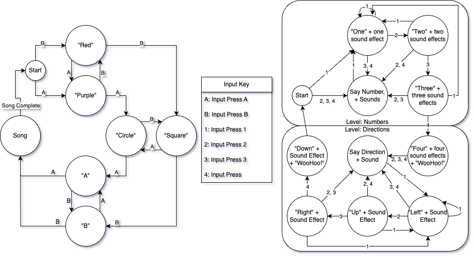
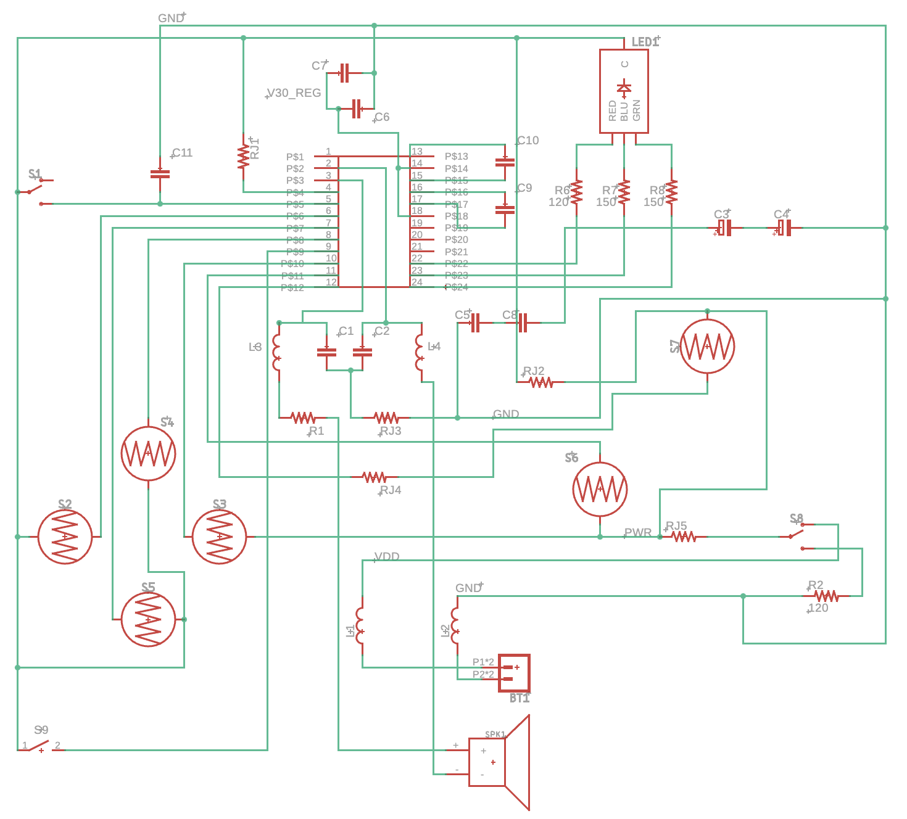

Product Analysis
High-Level Operation

This page showcases the analysis of the Fisher-price: Laugh & Learn: Lil' Gamer. A National Instruments Virtual Bench was used for some measurements, while a generic battery powered multimeter was used for others to validate some claims. We begin above with a high level schematic and transition downwards into more detail towards a bill of materials. The Lil' Gamer features eight input switches, where seven are used during operation and one is the power switch. One PCB footprint on the schematic later on this page represents a ninth switch, but this switch does not exist on the final product and might be an engineering test switch.

In the above diagram, the left cycle operates separately from the right cycle. If the right cycle is interrupted by the left cycle or a game cartridge press, it resets to "say direction" or "say number," depending on what "level" is active. The game cartridge is not featured because it does not follow such a complex sequence, but it does follow a pattern of eight songs. Four of these songs feature lyrics and can only be activated by pressing the cartridge. The other four songs are the same songs that play when the cycle of the letter buttons reaches the "song" state. During any song without lyrics, buttons can be pressed to cause sound effects to overlap the song.
Electrical Analysis
The table below showcases the electrical characteristics as measured by a multimeter during different phases of operation. To obtain "expected" voltage and current measurements, the voltage and current across the battery terminals was measured while the product was turned on but not outputting or processing anything. To obtain "extreme" voltage and current measurements, the same terminals were measured after a button press, comparing different button presses and sequences to obtain a maximum potential voltage and current. Current was measured across the positive terminal only, because measuring it to ground caused a short circuit. Once these values were obtained, they were multiplied together to get expected and extreme power consumption, and this power consumption was compared to the combined 2.43wH of the three source Zinc-Carbon AAA batteries.
A clock signal could not be found along the terminals of the MCU, but the speaker's frequency was estimated from the waveform gathered during the playback of audio (see the operation page) and reported in both columns. Amperage and voltage calculations remained consistent for one second, so we will use one second as the base point for the watt-hour load of the system. By dividing the second-long power calculations by the one second it stays active, we can estimate the wH load of the system.
| Value | Expected | Extreme |
|---|---|---|
| Voltage | 4.54V | 4.49V |
| Current | 3µA | 15µA |
| Power Consumption | 49mWh | 242mWh |
| Battery Life | 50 Hours | 10 Hours |
| Frequency | 200kHz | 200kHz |

Below is an estimated schematic of the Lil' Gamer. It was obtained by observing the printed routes on the PCB (above) and performing a continuity test on some points that could not be seen through obvious routing. One such invisible route is the path from C2 to pin 2 of the MCU.

The eight input switches are all capable of connecting the output of a ninth power switch (a regulated 4.5V source when the device is switched on, and 0V when switched off) to the MCU through input pins, as mapped in the input/output table below. Pins 2 and 3 on the MCU send an audio signal through an RLC circuit to the speaker. Pins 22, 23, and 24 output signals through resistors to the RGB LED in the form of low-true logic to activate particular colors, also mapped in the input/output table below. The schematic's green and blue terminals are incorrectly labeled, because I could not find a schematic library component to exactly match the LED on the board. The low-true logic means that (for example) pin 22 remains high (4.5V) while the system is on and the LED's red color is off, but when pin 22 is low (1.5V), the LED is displaying red.
| Descriptive Name | PCB Label | MCU Pin | Input / Output |
|---|---|---|---|
| Game Cartridge | S1 | P5 | Input |
| Left Button | S2 | P6 | Input |
| Right Button | S3 | P10 | Input |
| Up Button | S4 | P8 | Input |
| Down Button | S5 | P7 | Input |
| A Button | S6 | P11 | Input |
| B Button | S7 | P12 | Input |
| Power Switch | S8 | P4 | Power |
| Missing Button | S9 | P9 | Input |
| Speaker + | SPK1+ | P3 | Output |
| Speaker - | SPK1- | P2 | Output |
| Red LED | LED1-R | P22 | Output |
| Green LED | LED1-G | P23 | Output |
| Blue LED | LED1-B | P24 | Output |
The PCB has a footprint and routing for S9 that suggests it could be a hard-plastic button soldered onto the board, but a part for S9 is not on the board. The structure of the plastic casing has a circular blue removable piece that goes directly on top of the spot for S9, which leads me to believe that S9 was a factory testing button to speed up the quality control process. S9 may have run a test function to output various values proving the circuit's correctness, or S9 may have been a reset button. It is difficult to tell from only the PCB.
Bill of Materials
Electrical
Contained in this section is the electrical bill of materials. It was obtained by surveying Digikey for parts comparable to what appear on the PCB. The MCU was the least comparable component, because the labeled number (GPCE 1516A ADBPS600 2146) did not appear to correspond to anything manufactured online, and I could not recognize the logo printed on the component. Instead of finding an exact match, I found a 24-pin MCU that contained on-board flash memory that would be able to store the audio files and internal logic, as well as latching state-memory. RJ3 and S9 are not on the PCB, so they are excluded from the Electrical Bill of Materials.
| Manufacturer | Manufacturer Part Number | Description | Quantity | Cost Per Unit (USD) | Total Cost (USD) |
|---|---|---|---|---|---|
| Microchip Technology | ATF22LV10C-10XU | 24-Pin MCU with Flash Memory and Latches | 1 | 2.49 | 2.49 |
| Murata Technology | LQG15WH1N8B02D | SMD Inductor | 4 | 0.25 | 1.00 |
| Stackpole Electronics Inc | RMCF0402ZT0R00 | 0 Ohm Resistor | 4 | 0.10 | 0.40 |
| Bourns Inc | CR0402-FX-1002GLF | 10K Ohm SMD Resistor | 2 | 0.10 | 0.20 |
| Bourns Inc | CR0402-FX-1200GLF | 120 Ohm SMD Resistor | 1 | 0.10 | 0.10 |
| Stackpole Electronics Inc | RMCF1206JT150R | 150 Ohm SMD Resistor | 2 | 0.10 | 0.20 |
| Murata Electronics | GRM0335C1E100JA01D | Small ceramic SMD Capacitor | 8 | 0.10 | 0.80 |
| Samsung Electro-Mechanics | CL05A104KA5NNNC | Large ceramic SMD Capacitor | 1 | 0.10 | 0.10 |
| Würth Elektronik | 875105242006 | 47uF 10V Capacitor | 2 | 0.50 | 1.00 |
| C&K | PN11SHNA03QE | Spring Push Switch, SPDT | 1 | 1.64 | 1.64 |
| E-Switch | EG1201A | Power Switch, SPDT | 1 | 0.76 | 0.76 |
| CUI Devices | CMS-28588N-L152 | Speaker | 1 | 3.97 | 3.97 |
| Inolux | IN-S126TASRGB | RGB LED | 1 | 0.55 | 0.55 |
| Keystone Electronics | 2479 | 3 AAA Battery Pack | 1 | 1.81 | 1.81 |
| Rayovac | E302343201 | AAA Battery | 3 | 0.81 | 2.43 |
| Total | 17.45 |
Non-electrical
| Description | Quantity | Cost Per Unit (USD) | Total Cost (USD) |
|---|---|---|---|
| Plastic Casing (96 g 3D Printed) | 1 | 19.20 | 19.20 |
| Tetris Pieces (12 g 3D Printed) | 1 | 2.40 | 2.40 |
| Face Buttons (11 g 3D Printed) | 1 | 2.20 | 2.20 |
| Fake Side Button (3 g 3D Printed) | 1 | 0.60 | 0.60 |
| Fake Game Cartridge (19 g 3D Printed) | 1 | 3.80 | 3.80 |
| Fake Screen (8 g 3D Printed) | 1 | 1.60 | 1.60 |
| Screws | 11 | 0.05 | 0.55 |
| Silicon Button Pads | 6 | 0.11 | 0.66 |
| Total | 31.01 |
From this estimated bill of materials considering screws purchased in bulk and plastic components 3D printed from the Mississippi State Library at $0.20 per gram, the Fisher-price: Laugh & Learn: Lil' Gamer comes out to a price of $48.46. This price could be greatly reduced with parts purchased in bulk or manufactured in-house.
Now that the product has been fully analyzed, it is time to put it back together in the Product Reassembly page.
Template © 2017 uiCookies:Aside.
All Rights Reserved. Designed by uicookies.com